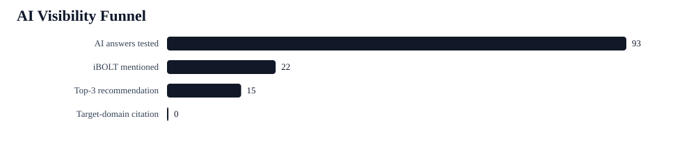
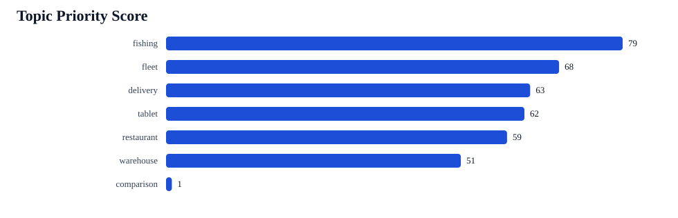
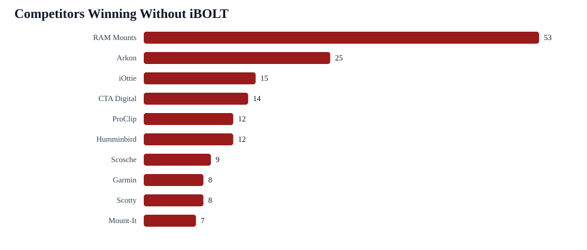

AI Visibility Growth Dashboard
This report answers the practical KPI question: citation rate matters, but it is not the only score to chase. The current first bottleneck is non-branded recommendation visibility. Citation work becomes critical when the answer surface has web search, sources, or shopping results.
Baseline
- AI answers tested: 93
- iBOLT mention rate: 22/93 (24%)
- Non-branded iBOLT mention rate: 4/75 (5%)
- Top-3 recommendation rate: 15/93 (16%)
- Target-domain citation rate: 0/93 (0%)
- Rows with any source URLs: 0/93
- Competitor-only rows: 68
- Co-mention rows: 18
- Product/family signal rows: 30/93
- Actual catalog product entity rows: 8/93
- Live pages audited: 142
- Average live page citability score: 75/100
KPI Targets
| Metric | Baseline | First target | Strong target | Owner | First action |
|---|---|---|---|---|---|
| All-prompt iBOLT mention rate | 22/93 (24%) | 35% | 45% | Jacob/app | Refresh high-opportunity pages with query-exact answer blocks and named product entities. |
| Non-branded iBOLT mention rate | 4/75 (5%) | 15% | 25% | Jacob/app + SEO contractor | Build competitor-adjacent solution pages and earn third-party mentions in the same consideration sets. |
| Top-3 recommendation rate | 15/93 (16%) | 25% | 35% | Jacob/app | Use fair comparison blocks that name when iBOLT is the specialist choice. |
| Target-domain citation rate | 0/93 (0%) | 3-5% | 10%+ | SEO contractor + Jacob/app | Add schema/FAQ/quick answers, then get external industry pages to cite iBOLT pages. |
| Average live page citability score | 142 pages (75/100) | 82/100 | 88/100 | Jacob/app | Batch-add quick answer blocks, FAQ schema, Article schema, image alt text, and comparison sections. |
| Actual catalog product entity rows | 8/93 (9%) | 20/93 rows | 35/93 rows | Jacob/app | Use exact product titles, handles, and image alt text in refreshed posts and product modules. |
Topic Priorities
| Priority | Topic | Answers | Mention rate | Competitor pressure | Citation gap queries | First action |
|---|---|---|---|---|---|---|
| 79 | fishing | 15 | 0% | 51 | 2 | Clarify iBOLT as the mounting solution for Garmin, Lowrance, Humminbird, RAM, Scotty, and YakAttack consideration sets. |
| 68 | fleet | 18 | 22% | 47 | 3 | Add fleet standardization proof, drill-base options, and comparison language against RAM Mounts. |
| 63 | delivery | 21 | 29% | 43 | 3 | Add delivery-driver quick answers and compare commercial retention against RAM Mounts. |
| 62 | tablet | 3 | 0% | 11 | 1 | Add answer-first copy, FAQ schema, competitor tradeoffs, and exact iBOLT product names. |
| 59 | restaurant | 24 | 29% | 47 | 1 | Make Tablet Tower, LockPro, and Dock'n Lock the named product entities in restaurant tablet and POS pages. |
| 51 | warehouse | 9 | 22% | 24 | 0 | Tie barcode scanner, forklift, VESA, and warehouse tablet pages together with product modules. |
| 1 | comparison | 3 | 100% | 3 | 0 | Preserve current wins and add stronger product entity names. |
Citation Rate Work
| Issue | Pages affected | Impact | Fix | Success check |
|---|---|---|---|---|
| Images missing alt text | 123 | Medium | Use descriptive alt text with exact product name, use case, and mounting context. | No article images have blank or generic alt text. |
| No quick-answer block | 113 | High | Add a 40-70 word direct answer immediately below the intro or first H2. | The page answers the target buyer question before long narrative copy. |
| No FAQ schema | 99 | High | Add visible FAQ plus FAQPage JSON-LD with 4-6 real buyer questions. | FAQ schema validates and matches visible page content. |
| No comparison/tradeoff signals | 55 | High | Add fair comparison blocks for RAM Mounts, Arkon, iOttie, CTA Digital, ProClip, or topic-specific competitors. | The page states when each option fits and when iBOLT is the specialist choice. |
| No Article/BlogPosting schema | 19 | Medium | Add Article or BlogPosting JSON-LD with headline, date, author, image, and publisher. | Rich Results or schema validation recognizes the article entity. |
Competitor Adjacency
| Competitor | Raw appearances | With iBOLT | Without iBOLT | Main categories | Counter-positioning |
|---|---|---|---|---|---|
| RAM Mounts | 63 | 10 | 53 | fleet 18; delivery 14; fishing 9; warehouse 9; restaurant 7; comparison 3 | Position iBOLT as the specialist for exact business workflows, with modular parts that remain cross-compatible with industry-standard balls and AMPS patterns. |
| Arkon | 30 | 5 | 25 | fleet 11; restaurant 8; delivery 6; warehouse 3; tablet 2 | Position iBOLT around commercial durability, locked tablet workflows, restaurant stations, forklift mounts, and fleet-specific fit. |
| iOttie | 18 | 3 | 15 | delivery 12; fleet 5; tablet 1 | Position iBOLT as commercial-grade equipment rather than consumer phone accessories. |
| CTA Digital | 17 | 3 | 14 | restaurant 14; tablet 2; warehouse 1 | iBOLT should emphasize multi-tablet restaurant operations, delivery app stations, locking holders, and POS mounting flexibility. |
| ProClip | 13 | 1 | 12 | fleet 7; delivery 4; warehouse 2 | Position iBOLT around modular fleet deployment, universal device changes, drill bases, AMPS plates, and rugged shared-vehicle use. |
| Humminbird | 12 | 0 | 12 | fishing 12 | Clarify that iBOLT complements fish finders and marine electronics by solving the mounting, vibration, and placement problem. |
| Scosche | 9 | 0 | 9 | delivery 5; fleet 4 | Position iBOLT as commercial-grade equipment rather than consumer phone accessories. |
| Garmin | 8 | 0 | 8 | fishing 8 | Clarify that iBOLT complements fish finders and marine electronics by solving the mounting, vibration, and placement problem. |
| Scotty | 8 | 0 | 8 | fishing 8 | Clarify that iBOLT complements fish finders and marine electronics by solving the mounting, vibration, and placement problem. |
| Mount-It | 11 | 4 | 7 | restaurant 11 | Position iBOLT around multi-tablet restaurant operations, delivery app stations, locking holders, and modular POS mounting. |
First Pages To Refresh
| Urgency | Score | Topic | Page | Competitors detected | Fixes |
|---|---|---|---|---|---|
| 117 | 51 | streaming | [5 Ways To Increase Your YouTube Audience With An Action Camera using iBOLT Mounts](https://iboltmounts.com/blogs/news/5-ways-to-increase-your-youtube-audience-with-an-action-camera-using-ibolt-mounts) | Garmin | Add FAQ section and FAQ schema for AI-readable Q&A.; Add a concise quick-answer block near the top.; Add comparison/tradeoff language against alternatives.; Add more descriptive H2/H3 sections.; Add descriptive alt text to all article images.; Tighten meta description to roughly 110-165 characters. |
| 117 | 51 | amps/modular | [Unmatched Adaptability: Explore iBOLT's Modular Tablet Mount Solutions](https://iboltmounts.com/blogs/news/customizable-mounting-solutions-for-every-need) | Garmin | Add FAQ section and FAQ schema for AI-readable Q&A.; Add a concise quick-answer block near the top.; Add comparison/tradeoff language against alternatives.; Add more descriptive H2/H3 sections.; Add descriptive alt text to all article images.; Tighten meta description to roughly 110-165 characters. |
| 117 | 51 | fishing | [HOW TO MOUNT A FISH FINDER TO YOUR BOAT USING IBOLT MOUNTS](https://iboltmounts.com/blogs/news/how-to-mount-a-fish-finder-to-your-boat-using-ibolt-mounts) | Garmin; Lowrance | Add FAQ section and FAQ schema for AI-readable Q&A.; Add a concise quick-answer block near the top.; Add comparison/tradeoff language against alternatives.; Add more descriptive H2/H3 sections.; Add descriptive alt text to all article images.; Tighten meta description to roughly 110-165 characters. |
| 117 | 51 | fishing | [How to mount a Fish Finder to your boat using iBOLT Mounts](https://iboltmounts.com/blogs/news/how-to-mount-a-fish-finder-to-your-boat-using-ibolt-mounts-1) | Garmin; Lowrance | Add FAQ section and FAQ schema for AI-readable Q&A.; Add a concise quick-answer block near the top.; Add comparison/tradeoff language against alternatives.; Add more descriptive H2/H3 sections.; Add descriptive alt text to all article images.; Tighten meta description to roughly 110-165 characters. |
| 117 | 51 | amps/modular | [How to spot imitation iBOLT products on Amazon](https://iboltmounts.com/blogs/news/how-to-spot-imitation-ibolt-products-on-amazon) | Garmin | Add FAQ section and FAQ schema for AI-readable Q&A.; Add a concise quick-answer block near the top.; Add comparison/tradeoff language against alternatives.; Add more descriptive H2/H3 sections.; Add descriptive alt text to all article images.; Tighten meta description to roughly 110-165 characters. |
| 117 | 51 | education | [IBOLT MOUNTS FOR BACK-TO-SCHOOL](https://iboltmounts.com/blogs/news/ibolt-mounts-for-back-to-school) | Garmin | Add FAQ section and FAQ schema for AI-readable Q&A.; Add a concise quick-answer block near the top.; Add comparison/tradeoff language against alternatives.; Add more descriptive H2/H3 sections.; Add descriptive alt text to all article images.; Tighten meta description to roughly 110-165 characters. |
| 117 | 51 | amps/modular | [iBOLT Mounts for Road Trips](https://iboltmounts.com/blogs/news/ibolt-mounts-for-road-trips) | Garmin | Add FAQ section and FAQ schema for AI-readable Q&A.; Add a concise quick-answer block near the top.; Add comparison/tradeoff language against alternatives.; Add more descriptive H2/H3 sections.; Add descriptive alt text to all article images.; Tighten meta description to roughly 110-165 characters. |
| 117 | 51 | offroad | [Mounts to take off-roading in your Jeep Wrangler](https://iboltmounts.com/blogs/news/mounts-to-take-off-roading-in-your-jeep-wrangler) | Garmin | Add FAQ section and FAQ schema for AI-readable Q&A.; Add a concise quick-answer block near the top.; Add comparison/tradeoff language against alternatives.; Add more descriptive H2/H3 sections.; Add descriptive alt text to all article images.; Tighten meta description to roughly 110-165 characters. |
| 117 | 51 | education | [THE BENEFITS OF GOING PAPERLESS IN SCHOOLS](https://iboltmounts.com/blogs/news/the-benefits-of-going-paperless-in-schools) | Garmin | Add FAQ section and FAQ schema for AI-readable Q&A.; Add a concise quick-answer block near the top.; Add comparison/tradeoff language against alternatives.; Add more descriptive H2/H3 sections.; Add descriptive alt text to all article images.; Tighten meta description to roughly 110-165 characters. |
| 117 | 51 | education | [TOP TABLET STANDS FOR STUDENTS GOING BACK TO SCHOOL](https://iboltmounts.com/blogs/news/the-best-tablet-stands-for-students-going-back-to-school) | Garmin | Add FAQ section and FAQ schema for AI-readable Q&A.; Add a concise quick-answer block near the top.; Add comparison/tradeoff language against alternatives.; Add more descriptive H2/H3 sections.; Add descriptive alt text to all article images.; Tighten meta description to roughly 110-165 characters. |
| 117 | 51 | amps/modular | [Top 4 Locking Tablet Mounts to Keep Your Device Safe](https://iboltmounts.com/blogs/news/top-4-locking-tablet-mounts-to-keep-your-device-safe) | Garmin | Add FAQ section and FAQ schema for AI-readable Q&A.; Add a concise quick-answer block near the top.; Add comparison/tradeoff language against alternatives.; Add more descriptive H2/H3 sections.; Add descriptive alt text to all article images.; Tighten meta description to roughly 110-165 characters. |
| 117 | 51 | amps/modular | [TOP 5 MOUNTS FOR THE SAMSUNG GALAXY A7 LITE TABLET](https://iboltmounts.com/blogs/news/top-5-mounts-for-the-samsung-galaxy-a7-lite-tablet) | Garmin | Add FAQ section and FAQ schema for AI-readable Q&A.; Add a concise quick-answer block near the top.; Add comparison/tradeoff language against alternatives.; Add more descriptive H2/H3 sections.; Add descriptive alt text to all article images.; Tighten meta description to roughly 110-165 characters. |
How To Read This
- For ChatGPT, Claude, and Gemini without browsing, the best metric is non-branded mention rate plus top-3 recommendation rate.
- For Google AI Overviews, Perplexity, Gemini with search, ChatGPT search, and shopping assistants, citation rate becomes a key metric because the answer can expose source URLs.
- The site has enough page coverage to work from, but pages need answer-first structure, schema, and stronger product/entity language.
- External mentions still matter. The contractor should focus on credible third-party references and comparison placements while the app refreshes pages.
Source Evidence
- Benchmark directory: /Users/yakub/Desktop/iblotmark/content-output/openrouter-ai-benchmark-2026-06-17-17-11-06
- Live blog audit directory: /Users/yakub/Desktop/iblotmark/content-output/live-blog-ai-citability-merged-2026-06-18T03-54-14-604Z
- Citation priority model: /Users/yakub/Desktop/iblotmark/content-output/openrouter-ai-benchmark-2026-06-17-17-11-06/citation-priority-model/REPORT.html


